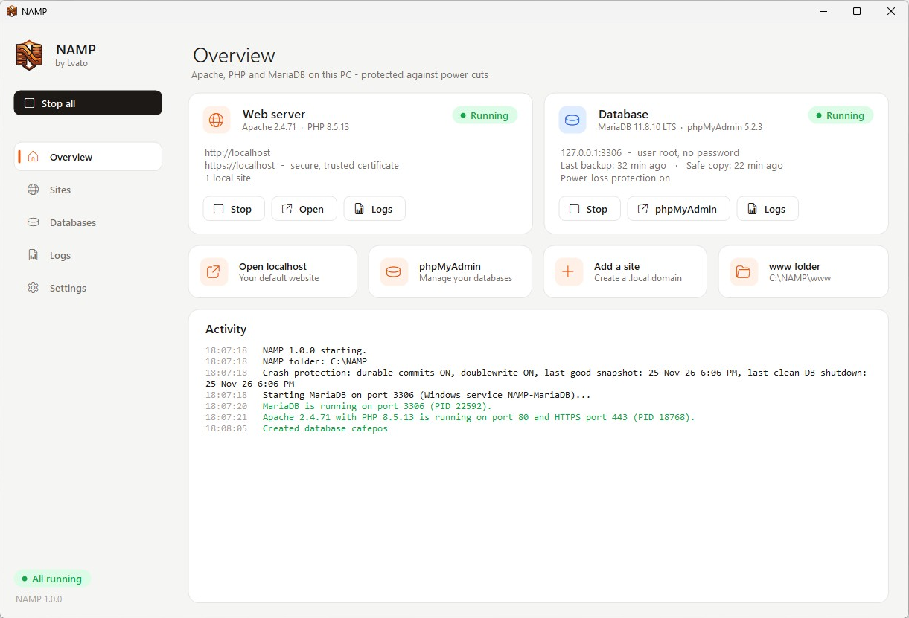
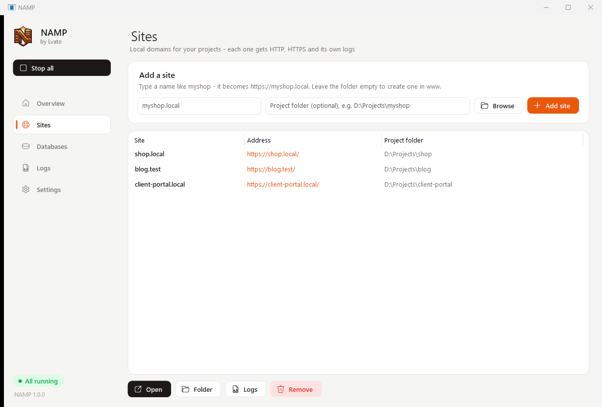
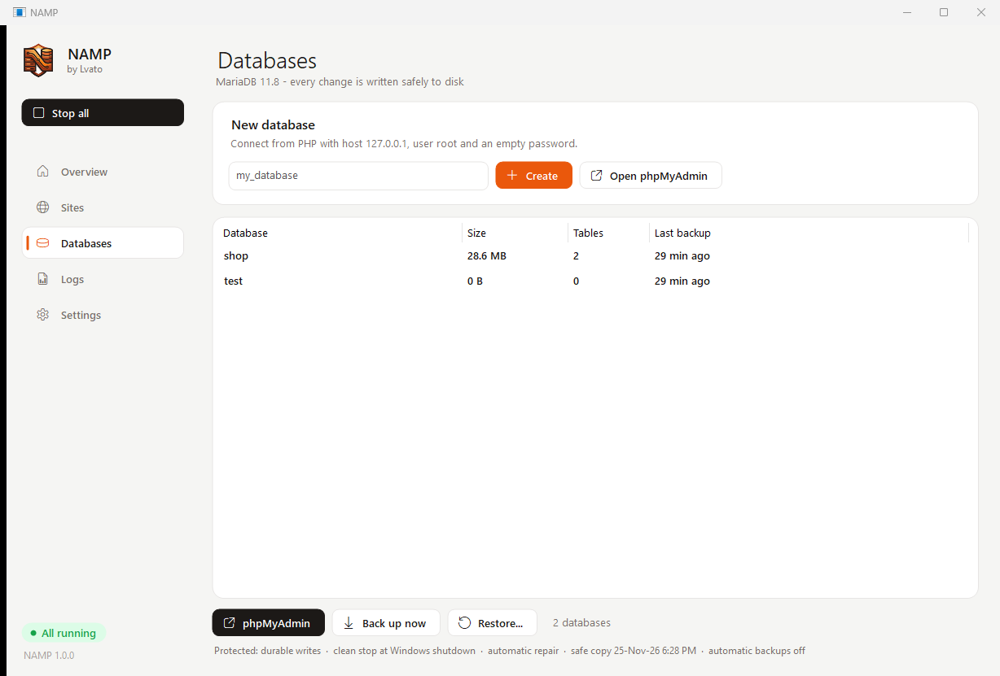
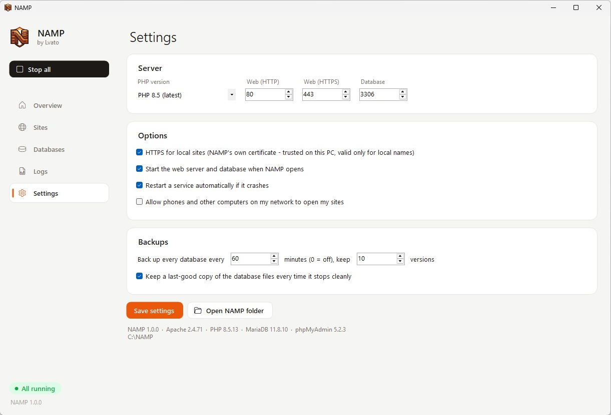

Meet NAMP
Apache, PHP 8.5, MariaDB and phpMyAdmin in one installer. Real .local domains with HTTPS, and a database that survives power cuts.
Free · 110 MB · Windows 11 64-bit · Coming from XAMPP?

Pull the plug. Keep your data.
We crash the database on purpose in every build. Here is what our test suite measures.
Local, but like production
Everything a PHP project expects, without the setup afternoon.

Every project gets a real domain
Type myshop and open https://myshop.local. NAMP updates the hosts file and issues a certificate your browser trusts, so HTTPS redirects and secure cookies work exactly like on your live server.
Each site has its own error, visit and PHP logs, one click away.

Power cut? Your database is fine.
Every commit is written to disk before it is confirmed. MariaDB runs as a Windows service, so it stops cleanly when you shut down - even if NAMP was closed.
If something does break, NAMP repairs it on the next start, keeps a last-good copy and backs up every database each hour. Damaged files are set aside, never deleted.

One download. Nothing else to install.
Apache 2.4.71, PHP 8.5.13 and 8.3.37, MariaDB 11.8 LTS and phpMyAdmin 5.2.3 come in a single 110 MB installer, Visual C++ runtime included.
Switch PHP versions in Settings, open phpMyAdmin already logged in, and connect from PHP with 127.0.0.1, user root, no password. Close the window and everything stops safely.
Small things, done right
No admin needed
After setup NAMP runs as you. No UAC prompt every morning.
Watches itself
If Apache or MariaDB crashes, NAMP notices and restarts it.
Hourly backups
Every database, compressed. Unchanged ones are skipped. Restore in two clicks.
Logs per site
Errors, visits and PHP warnings for each domain, with live tail and search.
Bring any PHP project
Point a site at your folder and open it in the browser.
Laravel apps
Point a site at your project's public folder. Rewrites work out of the box.
WordPress sites
MariaDB, mod_rewrite and HTTPS ready for pretty permalinks.
Drop files, refresh
Put files in C:\NAMP\www and open localhost.
Webhooks and APIs
Call https://yoursite.local from PHP with cURL - NAMP's certificate is trusted.
Coming from XAMPP
Same ports, same root user. Export your databases and import them in a few clicks.
Ready to go live?
- Hosting from $0.50/mo. Fast servers for PHP, Laravel and WordPress, from the team that makes NAMP.
- Free SSL. Your live site gets HTTPS too, just like on NAMP.
- Free migration. Send us your files and database, we move them for you.
- 24/7 human support and a 30-day money-back guarantee.
Straight answers
Is NAMP really free?
Yes. NAMP is made free by Lvato, a web hosting company. Apache, PHP, MariaDB and phpMyAdmin are open source projects bundled as they are.
Can I keep XAMPP installed?
Yes. NAMP installs to C:\NAMP and never touches XAMPP's files. Both use ports 80, 443 and 3306, so stop XAMPP's Apache and MySQL before starting NAMP - or change NAMP's ports in Settings. To move your databases, export them in XAMPP's phpMyAdmin and import them in NAMP.
What happens if the power goes out?
Committed data is already on disk, and the database replays its log when it starts again. If files were damaged, NAMP repairs them step by step: cleaning crash-damaged logs, repairing system tables, a safe-mode export and rebuild, then the last-good copy and hourly SQL backups. Damaged files go to a quarantine folder and are never deleted.
Does it need administrator rights?
Only once, for the installer. It sets up the database service and a small "NAMP Helper" service that updates the hosts file and HTTPS certificates. After that, NAMP runs as a normal user.
Is the HTTPS certificate safe?
NAMP creates its own certificate authority on your PC. It can only issue certificates for local names like .local and .test, and its root key is destroyed right after setup - it can never be used for a real website. Uninstalling NAMP removes it.
How do I connect from PHP?
Host 127.0.0.1 (or localhost), port 3306, user root, empty password - the same as XAMPP, so most projects work without changes.
Which Windows versions?
Windows 11, 64-bit. Windows 10 64-bit should work too.
How do I uninstall?
Windows Settings, Apps, NAMP. The services, certificate and hosts entries are removed. Your websites, databases and backups stay in C:\NAMP until you delete the folder.
Your local server, sorted.
One installer. Free forever.
SHA-256 F305A88C52B844E2C3F246CE44564EB6E115BA98ED3C845397B9AF7A25D24B1A